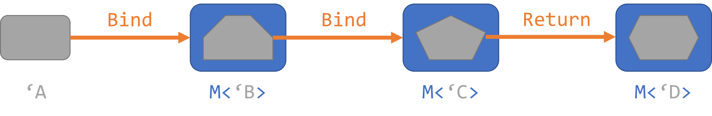
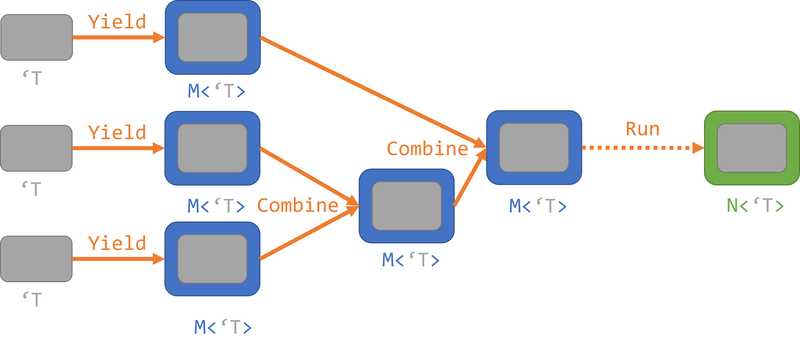

Heinrich Lukas Weil
This question has been thoroughly answered in technical precision in many places over the internet (Check out Further reading). My aim here is not trying to give a better explanation.
Instead, in this blogpost, I want to focus on practicle use cases of computation expressions. So, to answer this question in the context of this blogbost:
Computation expressions are a versatile tool to express complex behaviour in a simple syntax.
You open a computation expression (CE) with the following syntax:
computation-expression-name {computation-expression-body}
Inside these { } brackets, an encapsulated environment with its own set of predefined rules exist.
These rules create a behaviour in the background that can be complex or simple, while exposing an easy to grasp language to the user.
An user can also create their own Computation expression builder with it`s own set of behaviours for every function.
There are around 20 different Members with predefined names a programmer can implement, exposing around 10 different keywords to the user. The full list can be found here.
The possibilities for different computation expressions are basically limitless. As a starting point for programmers new to computation expressions I therefore want to present a few often used ways for creating their own Computation Expression builder.
Bind based computation expressions make especially use of the let! and the return keywords.
Here is an example for an 'async' computation expression, taken from the official F# reference:
let fetchAndDownload url =
// Keyword for starting the async computation expression
async {
let client = new System.Net.WebClient()
// client.AsyncDownloadData returns a value of type Async<byte []>.
// but by using the let! keyword, bound to "data" is actually the unwrapped inner value of type byte [].
let! data = client.AsyncDownloadData url
// This unwrapped value can then conveniently fed into a follow up function.
let processedData = System.Text.Encoding.ASCII.GetString data
// The computation expression is finished by returning the result string.
// This value is again wrapped in the Async wrapper type, resulting in a return value of type Async<string>.
return processedData
}
The main idea here is, that you can work on the return values directly, rather than on the values wrapped into the Async type.
All the waiting for the thread to finish, wrapping and unwrapping is done implicitly for you, simply by using the let! keyword.

So, let's get started creating our own Computation expression builder. This option builder again can be
type OptionBuilder() =
// Return method wraps the final return value in an option
member this.Return(value : 'T) : 'T Option =
printfn $"Return {value}"
Some value
// Bind method contains logic for unwrapping the option value and expects an expression that has an option as an return value
member this.Bind(wrappedValue : 'T option, f : 'T -> 'T option) : 'T option =
printfn $"Bind {wrappedValue}"
match wrappedValue with
| Some unwrappedValue ->
f unwrappedValue
| None -> None
// For easier initialization of the computation expression
let option = OptionBuilder()
This is an very easy implementation that can be used to work on optional values in an easy way.
Inside the initialized computation expression, the Return method can be called by using the return keyword. The Bind method can be called by using the let! keyword.
let addOptions aO bO cO =
option {
let! a = aO
let! b = bO
let! c = cO
return (a + b + c)
}
addOptions (Some 5) (Some 4) (Some 10)
//Bind Some(5)
//Bind Some(4)
//Bind Some(10)
//Return 19
//val it : int option = Some 19
addOptions (Some 5) None (Some 10)
//Bind Some(5)
//Bind
//val it : int option = None
As expected, in the first case, the Bind method gets called 3 times, and the resulting value is 19.
In the second case, the resulting None was also expected. What is interesting to notice here,
is that the Bind method gets called only two times.
This can actually be a great feature, as in cases like these, you don't want the program to continue executing when something doesn't work out.
This is especially the case, when each computation is time intensive.
A good explanation for why this happens can be found here
Yield based computation expressions make especially use of the yield, yield! and for keywords.
The main aim here is usually collecting values and returning some kind of collection.
Here is an example for a seq computation expression:
seq {
// Implicit yielding of single values
1
2
3
// Explicit yielding of a collection
yield! [4;5;6]
}
|> Seq.toList
The basic structure of operations performed in the seq computation expression can be seen in the following picture.
Each value get's yielded seperately and then combined step by step into a single sequence.

So let's build our own bare minimum list builder:
type ListBuilder() =
/// This will be exposed to the user as `yield`
member this.Yield(v : 'T) =
printfn $"Yield {v}"
[v]
/// This will combine the yielded values in the background
member this.Combine(v1 : 'T list, v2 : 'T list) =
printfn $"Combine {v1} with {v2}"
v1 @ v2
/// This method is needed. It can be used to lazily evaluate the operations in the CE. Instead here, we just directly execute the given function.
member this.Delay(f : unit -> 'T) =
printfn $"Delay"
let res = f()
printfn $"Delay result: {res}"
res
// For easier initialization of the computation expression
let list = ListBuilder()
So let's test it out
list {
1
2
3
}
//Delay
//Yield 1
//Delay
//Yield 2
//Delay
//Yield 3
//Delay result: [3]
//Combine [2] with [3]
//Delay result: [2; 3]
//Combine [1] with [2; 3]
//Delay result: [1; 2; 3]
//val it : int list = [1; 2; 3]
Something to note here is that the yielding takes place from top to bottom, while the combining is actually done from bottom to top.
Of course in many cases you don't only want to yield single values but also expect more complex programming constructs to be usable.
In the following is shown an extended version of the previously implemented list builder:
type ExtendedListBuilder() =
/// This will be exposed to the user as `yield`
member this.Yield(v : 'T) =
printfn $"Yield {v}"
[v]
/// This will combine the yielded values in the background
member this.Combine(v1 : 'T list, v2 : 'T list) =
printfn $"Combine {v1} with {v2}"
v1 @ v2
/// This method is needed. It can be used to lazily evaluate the operations in the CE. Instead here, we just directly execute the given function.
member this.Delay(f : unit -> 'T) =
printfn $"Delay"
let res = f()
printfn $"Delay result: {res}"
res
/// Is called in empty else branches
member this.Zero() =
printfn "Zero"
[]
/// Allows for using for loops in the computation expression
member this.For(vs : 'U seq, f : 'U -> 'T list) =
printfn $"For"
vs
|> Seq.collect f
|> Seq.toList
/// This will allow for using the yield! method
member this.YieldFrom(vs : 'T list) =
printfn $"YieldFrom {vs}"
vs
// For easier initialization of the computation expression
let extList = ExtendedListBuilder()
Again let's test it out.
extList {
1
2
for i in [3;4] do
i
yield! [5;6]
if true then 7
}
//Delay
//Yield 1
//Delay
//Yield 2
//Delay
//For
//Yield 3
//Yield 4
//Delay
//YieldFrom [5; 6]
//Delay
//Yield 7
//Delay result: [7]
//Combine [5; 6] with [7]
//Delay result: [5; 6; 7]
//Combine [3; 4] with [5; 6; 7]
//Delay result: [3; 4; 5; ... ]
//Combine [2] with [3; 4; 5; ... ]
//Delay result: [2; 3; 4; ... ]
//Combine [1] with [2; 3; 4; ... ]
//Delay result: [1; 2; 3; ... ]
//val it : int list = [1; 2; 3; 4; 5; 6; 7]
One important thing to note here: The values returned in the for expression actually get yielded by the Yield method.
In the case of yield!, only the YieldFrom method gets called. This means, that the input of type 'U in the For method is actually already a yielded value.
Another thing you can do is to add a Run method. This method will be executed at the end of the Computation expression.
We can also combine this with the ability of the Computation expression to store a state in itself. By this we can control what exactly Run will do:
/// Used to specify which mathematical operation should be applied on the float list to reduce it
type MathOperation =
| Sum
| Multiply
| Custom of (float list -> float)
/// Apply the given operation on the float list, resulting in a single float
member this.Apply(vals : float list) =
match this with
| Sum -> vals |> List.sum
| Multiply -> vals |> List.reduce (fun a b -> a * b)
| Custom operation -> operation vals
type MathBuilder() =
// Mutable math operation state, default value is Sum
let mutable operation = Sum
/// When the user yields a value of type MathOperation, this will not be added to the list of values but overwrite the state of the operation variable
member this.Yield(newOperation : MathOperation) =
operation <- newOperation
[]
/// User can yield ints
member this.Yield(v : int) =
printfn $"Yield {v}"
[float v]
/// User can yield floats
member this.Yield(v : float) =
printfn $"Yield {v}"
[v]
/// This will combine the yielded values in the background
member this.Combine(v1 : float list, v2 : float list) =
printfn $"Combine {v1} with {v2}"
v1 @ v2
/// This method is needed. It can be used to lazily evaluate the operations in the CE. Instead here, we just directly execute the given function.
member this.Delay(f : unit -> 'T) =
printfn $"Delay"
let res = f()
printfn $"Delay result: {res}"
res
/// Is called in empty else branches
member this.Zero() =
printfn "Zero"
[]
/// Allows for using for loops in the computation expression
member this.For(vs : 'U seq, f : 'U -> float list) =
printfn $"For"
vs
|> Seq.collect f
|> Seq.toList
/// This will allow for using the yield! method
member this.YieldFrom(vs : 'T list) =
printfn $"YieldFrom {vs}"
vs
/// This will run the operation on the final float list, returning a single float as output of the compuation expression.
member this.Run(vs : float list) =
printfn $"Run {vs}"
operation.Apply vs
// For easier initialization of the computation expression
let math = MathBuilder()
So let's test this out
math {
1
2
3
}
// Results in 6
let factorial x =
math {
Multiply
for i = 1 to x do
i
}
factorial 4
//Delay
//Delay
//For
//Yield 1
//Yield 2
//Yield 3
//Yield 4
//Delay result: [1; 2; 3; ... ]
//Combine [] with [1; 2; 3; ... ]
//Delay result: [1; 2; 3; ... ]
//Run [1; 2; 3; ... ]
//val it : float = 24.0
As you can see this approach can be used to further tune the Computation expression in a very generic way.
Besides the basic keywords shared between all computation expressions, one can also define their own keywords by using the CustomOperation class.
Methods with this
type Cake =
{
Size : int
Filling : string
PackagedAsPresent: bool
}
static member Default =
{
Size = 30
Filling = "Strawberry"
PackagedAsPresent = false
}
type CakeBuilder() =
member x.Yield (()) = Cake.Default
member x.Zero () = Cake.Default
[<CustomOperation("size")>]
member x.Size (cake : Cake, i: int) =
{cake with Size = i}
[<CustomOperation("filling")>]
member x.Filling (cake : Cake, s: string) =
{cake with Filling = s}
[<CustomOperation("package")>]
member x.PackageAsPresent (cake : Cake) =
{cake with PackagedAsPresent = true}
let cake = CakeBuilder()
Let's bake some cakes
cake {
()
}
//val it : Cake = { Size = 30
// Filling = "Strawberry"
// PackagedAsPresent = false }
cake {
size 1800
filling "Irish coffee cream"
package
}
//val it : Cake = { Size = 1800
// Filling = "Irish coffee cream"
// PackagedAsPresent = true }
For a good example of this kind of computation expression check out Saturn
val fetchAndDownload : url:System.Uri -> Async<string>
val url : System.Uri
val async : AsyncBuilder
<summary>Builds an asynchronous workflow using computation expression syntax.</summary>
val client : System.Net.WebClient
namespace System
namespace System.Net
type WebClient =
inherit Component
new : unit -> unit
member CancelAsync : unit -> unit
member DownloadData : address: string -> byte [] + 1 overload
member DownloadDataAsync : address: Uri -> unit + 1 overload
member DownloadDataTaskAsync : address: string -> Task<byte []> + 1 overload
member DownloadFile : address: string * fileName: string -> unit + 1 overload
member DownloadFileAsync : address: Uri * fileName: string -> unit + 1 overload
member DownloadFileTaskAsync : address: string * fileName: string -> Task + 1 overload
member DownloadString : address: string -> string + 1 overload
...
<summary>Provides common methods for sending data to and receiving data from a resource identified by a URI.</summary>
val data : byte []
member System.Net.WebClient.AsyncDownloadData : address:System.Uri -> Async<byte []>
val processedData : string
namespace System.Text
type Encoding =
interface ICloneable
new : unit -> unit + 2 overloads
member Clone : unit -> obj
member Equals : value: obj -> bool
member GetByteCount : chars: nativeptr<char> * count: int -> int + 5 overloads
member GetBytes : chars: nativeptr<char> * charCount: int * bytes: nativeptr<byte> * byteCount: int -> int + 7 overloads
member GetCharCount : bytes: nativeptr<byte> * count: int -> int + 3 overloads
member GetChars : bytes: nativeptr<byte> * byteCount: int * chars: nativeptr<char> * charCount: int -> int + 4 overloads
member GetDecoder : unit -> Decoder
member GetEncoder : unit -> Encoder
...
<summary>Represents a character encoding.</summary>
property System.Text.Encoding.ASCII: System.Text.Encoding with get
<summary>Gets an encoding for the ASCII (7-bit) character set.</summary>
<returns>An encoding for the ASCII (7-bit) character set.</returns>
System.Text.Encoding.GetString(bytes: System.ReadOnlySpan<byte>) : string
System.Text.Encoding.GetString(bytes: byte []) : string
System.Text.Encoding.GetString(bytes: nativeptr<byte>, byteCount: int) : string
System.Text.Encoding.GetString(bytes: byte [], index: int, count: int) : string
Multiple items
type OptionBuilder =
new : unit -> OptionBuilder
member Bind : wrappedValue:'T option * f:('T -> 'T option) -> 'T option
member Return : value:'T -> Option<'T>
--------------------
new : unit -> OptionBuilder
val this : OptionBuilder
val value : 'T
module Option
from Microsoft.FSharp.Core
<summary>Contains operations for working with options.</summary>
<category>Options</category>
val printfn : format:Printf.TextWriterFormat<'T> -> 'T
<summary>Print to <c>stdout</c> using the given format, and add a newline.</summary>
<param name="format">The formatter.</param>
<returns>The formatted result.</returns>
union case Option.Some: Value: 'T -> Option<'T>
<summary>The representation of "Value of type 'T"</summary>
<param name="Value">The input value.</param>
<returns>An option representing the value.</returns>
val wrappedValue : 'T option
type 'T option = Option<'T>
<summary>The type of optional values. When used from other CLI languages the
empty option is the <c>null</c> value. </summary>
<remarks>Use the constructors <c>Some</c> and <c>None</c> to create values of this type.
Use the values in the <c>Option</c> module to manipulate values of this type,
or pattern match against the values directly.
'None' values will appear as the value <c>null</c> to other CLI languages.
Instance methods on this type will appear as static methods to other CLI languages
due to the use of <c>null</c> as a value representation.</remarks>
<category index="3">Options</category>
val f : ('T -> 'T option)
val unwrappedValue : 'T
union case Option.None: Option<'T>
<summary>The representation of "No value"</summary>
Multiple items
val option : OptionBuilder
--------------------
type 'T option = Option<'T>
<summary>The type of optional values. When used from other CLI languages the
empty option is the <c>null</c> value. </summary>
<remarks>Use the constructors <c>Some</c> and <c>None</c> to create values of this type.
Use the values in the <c>Option</c> module to manipulate values of this type,
or pattern match against the values directly.
'None' values will appear as the value <c>null</c> to other CLI languages.
Instance methods on this type will appear as static methods to other CLI languages
due to the use of <c>null</c> as a value representation.</remarks>
<category index="3">Options</category>
val addOptions : aO:int option -> bO:int option -> cO:int option -> int option
val aO : int option
val bO : int option
val cO : int option
val a : int
val b : int
val c : int
Multiple items
val seq : sequence:seq<'T> -> seq<'T>
<summary>Builds a sequence using sequence expression syntax</summary>
<param name="sequence">The input sequence.</param>
<returns>The result sequence.</returns>
--------------------
type seq<'T> = System.Collections.Generic.IEnumerable<'T>
<summary>An abbreviation for the CLI type <see cref="T:System.Collections.Generic.IEnumerable`1" /></summary>
<remarks>
See the <see cref="T:Microsoft.FSharp.Collections.SeqModule" /> module for further operations related to sequences.
See also <a href="https://docs.microsoft.com/dotnet/fsharp/language-reference/sequences">F# Language Guide - Sequences</a>.
</remarks>
module Seq
from Microsoft.FSharp.Collections
<summary>Contains operations for working with values of type <see cref="T:Microsoft.FSharp.Collections.seq`1" />.</summary>
val toList : source:seq<'T> -> 'T list
<summary>Builds a list from the given collection.</summary>
<param name="source">The input sequence.</param>
<returns>The result list.</returns>
<exception cref="T:System.ArgumentNullException">Thrown when the input sequence is null.</exception>
Multiple items
type ListBuilder =
new : unit -> ListBuilder
member Combine : v1:'T list * v2:'T list -> 'T list
member Delay : f:(unit -> 'T) -> 'T
member Yield : v:'T -> 'T list
--------------------
new : unit -> ListBuilder
val this : ListBuilder
val v : 'T
val v1 : 'T list
type 'T list = List<'T>
<summary>The type of immutable singly-linked lists. </summary>
<remarks>See the <see cref="T:Microsoft.FSharp.Collections.ListModule" /> module for further operations related to lists.
Use the constructors <c>[]</c> and <c>::</c> (infix) to create values of this type, or
the notation <c>[1; 2; 3]</c>. Use the values in the <c>List</c> module to manipulate
values of this type, or pattern match against the values directly.
See also <a href="https://docs.microsoft.com/dotnet/fsharp/language-reference/lists">F# Language Guide - Lists</a>.
</remarks>
val v2 : 'T list
val f : (unit -> 'T)
type unit = Unit
<summary>The type 'unit', which has only one value "()". This value is special and
always uses the representation 'null'.</summary>
<category index="1">Basic Types</category>
val res : 'T
Multiple items
val list : ListBuilder
--------------------
type 'T list = List<'T>
<summary>The type of immutable singly-linked lists. </summary>
<remarks>See the <see cref="T:Microsoft.FSharp.Collections.ListModule" /> module for further operations related to lists.
Use the constructors <c>[]</c> and <c>::</c> (infix) to create values of this type, or
the notation <c>[1; 2; 3]</c>. Use the values in the <c>List</c> module to manipulate
values of this type, or pattern match against the values directly.
See also <a href="https://docs.microsoft.com/dotnet/fsharp/language-reference/lists">F# Language Guide - Lists</a>.
</remarks>
Multiple items
type ExtendedListBuilder =
new : unit -> ExtendedListBuilder
member Combine : v1:'T list * v2:'T list -> 'T list
member Delay : f:(unit -> 'T) -> 'T
member For : vs:seq<'U> * f:('U -> 'T list) -> 'T list
member Yield : v:'T -> 'T list
member YieldFrom : vs:'T list -> 'T list
member Zero : unit -> 'a list
--------------------
new : unit -> ExtendedListBuilder
val this : ExtendedListBuilder
val vs : seq<'U>
val f : ('U -> 'T list)
val collect : mapping:('T -> #seq<'U>) -> source:seq<'T> -> seq<'U>
<summary>Applies the given function to each element of the sequence and concatenates all the
results.</summary>
<remarks>Remember sequence is lazy, effects are delayed until it is enumerated.</remarks>
<param name="mapping">A function to transform elements of the input sequence into the sequences
that will then be concatenated.</param>
<param name="source">The input sequence.</param>
<returns>The result sequence.</returns>
<exception cref="T:System.ArgumentNullException">Thrown when the input sequence is null.</exception>
val vs : 'T list
val extList : ExtendedListBuilder
val i : int
union case MathOperation.Sum: MathOperation
union case MathOperation.Multiply: MathOperation
union case MathOperation.Custom: (float list -> float) -> MathOperation
Multiple items
val float : value:'T -> float (requires member op_Explicit)
<summary>Converts the argument to 64-bit float. This is a direct conversion for all
primitive numeric types. For strings, the input is converted using <c>Double.Parse()</c>
with InvariantCulture settings. Otherwise the operation requires an appropriate
static conversion method on the input type.</summary>
<param name="value">The input value.</param>
<returns>The converted float</returns>
--------------------
[<Struct>]
type float = System.Double
<summary>An abbreviation for the CLI type <see cref="T:System.Double" />.</summary>
<category>Basic Types</category>
--------------------
type float<'Measure> =
float
<summary>The type of double-precision floating point numbers, annotated with a unit of measure.
The unit of measure is erased in compiled code and when values of this type
are analyzed using reflection. The type is representationally equivalent to
<see cref="T:System.Double" />.</summary>
<category index="6">Basic Types with Units of Measure</category>
val this : MathOperation
val vals : float list
Multiple items
module List
from Microsoft.FSharp.Collections
<summary>Contains operations for working with values of type <see cref="T:Microsoft.FSharp.Collections.list`1" />.</summary>
<namespacedoc><summary>Operations for collections such as lists, arrays, sets, maps and sequences. See also
<a href="https://docs.microsoft.com/dotnet/fsharp/language-reference/fsharp-collection-types">F# Collection Types</a> in the F# Language Guide.
</summary></namespacedoc>
--------------------
type List<'T> =
| ( [] )
| ( :: ) of Head: 'T * Tail: 'T list
interface IReadOnlyList<'T>
interface IReadOnlyCollection<'T>
interface IEnumerable
interface IEnumerable<'T>
member GetReverseIndex : rank:int * offset:int -> int
member GetSlice : startIndex:int option * endIndex:int option -> 'T list
static member Cons : head:'T * tail:'T list -> 'T list
member Head : 'T
member IsEmpty : bool
member Item : index:int -> 'T with get
...
<summary>The type of immutable singly-linked lists.</summary>
<remarks>Use the constructors <c>[]</c> and <c>::</c> (infix) to create values of this type, or
the notation <c>[1;2;3]</c>. Use the values in the <c>List</c> module to manipulate
values of this type, or pattern match against the values directly.
</remarks>
<exclude />
val sum : list:'T list -> 'T (requires member ( + ) and member get_Zero)
<summary>Returns the sum of the elements in the list.</summary>
<param name="list">The input list.</param>
<returns>The resulting sum.</returns>
val reduce : reduction:('T -> 'T -> 'T) -> list:'T list -> 'T
<summary>Apply a function to each element of the collection, threading an accumulator argument
through the computation. Apply the function to the first two elements of the list.
Then feed this result into the function along with the third element and so on.
Return the final result. If the input function is <c>f</c> and the elements are <c>i0...iN</c> then computes
<c>f (... (f i0 i1) i2 ...) iN</c>.</summary>
<remarks>Raises <see cref="T:System.ArgumentException" /> if <c>list</c> is empty</remarks>
<param name="reduction">The function to reduce two list elements to a single element.</param>
<param name="list">The input list.</param>
<exception cref="T:System.ArgumentException">Thrown when the list is empty.</exception>
<returns>The final reduced value.</returns>
val a : float
val b : float
val operation : (float list -> float)
Multiple items
type MathBuilder =
new : unit -> MathBuilder
member Combine : v1:float list * v2:float list -> float list
member Delay : f:(unit -> 'T) -> 'T
member For : vs:seq<'U> * f:('U -> float list) -> float list
member Run : vs:float list -> float
member Yield : v:float -> float list + 2 overloads
member YieldFrom : vs:'T list -> 'T list
member Zero : unit -> 'a list
--------------------
new : unit -> MathBuilder
val mutable operation : MathOperation
val this : MathBuilder
val newOperation : MathOperation
type MathOperation =
| Sum
| Multiply
| Custom of (float list -> float)
member Apply : vals:float list -> float
Used to specify which mathematical operation should be applied on the float list to reduce it
val v : int
Multiple items
val int : value:'T -> int (requires member op_Explicit)
<summary>Converts the argument to signed 32-bit integer. This is a direct conversion for all
primitive numeric types. For strings, the input is converted using <c>Int32.Parse()</c>
with InvariantCulture settings. Otherwise the operation requires an appropriate
static conversion method on the input type.</summary>
<param name="value">The input value.</param>
<returns>The converted int</returns>
--------------------
[<Struct>]
type int = int32
<summary>An abbreviation for the CLI type <see cref="T:System.Int32" />.</summary>
<category>Basic Types</category>
--------------------
type int<'Measure> =
int
<summary>The type of 32-bit signed integer numbers, annotated with a unit of measure. The unit
of measure is erased in compiled code and when values of this type
are analyzed using reflection. The type is representationally equivalent to
<see cref="T:System.Int32" />.</summary>
<category>Basic Types with Units of Measure</category>
val v : float
val v1 : float list
val v2 : float list
val f : ('U -> float list)
val vs : float list
member MathOperation.Apply : vals:float list -> float
Apply the given operation on the float list, resulting in a single float
val math : MathBuilder
val factorial : x:int -> float
val x : int
Cake.Size: int
Cake.Filling: string
Multiple items
val string : value:'T -> string
<summary>Converts the argument to a string using <c>ToString</c>.</summary>
<remarks>For standard integer and floating point values the and any type that implements <c>IFormattable</c><c>ToString</c> conversion uses <c>CultureInfo.InvariantCulture</c>. </remarks>
<param name="value">The input value.</param>
<returns>The converted string.</returns>
--------------------
type string = System.String
<summary>An abbreviation for the CLI type <see cref="T:System.String" />.</summary>
<category>Basic Types</category>
Cake.PackagedAsPresent: bool
[<Struct>]
type bool = System.Boolean
<summary>An abbreviation for the CLI type <see cref="T:System.Boolean" />.</summary>
<category>Basic Types</category>
Multiple items
type CakeBuilder =
new : unit -> CakeBuilder
member Filling : cake:Cake * s:string -> Cake
member PackageAsPresent : cake:Cake -> Cake
member Size : cake:Cake * i:int -> Cake
member Yield : unit -> Cake
member Zero : unit -> Cake
--------------------
new : unit -> CakeBuilder
val x : CakeBuilder
type Cake =
{ Size: int
Filling: string
PackagedAsPresent: bool }
static member Default : Cake
property Cake.Default: Cake with get
Multiple items
type CustomOperationAttribute =
inherit Attribute
new : name:string -> CustomOperationAttribute
member AllowIntoPattern : bool
member IsLikeGroupJoin : bool
member IsLikeJoin : bool
member IsLikeZip : bool
member JoinConditionWord : string
member MaintainsVariableSpace : bool
member MaintainsVariableSpaceUsingBind : bool
member Name : string
<summary>Indicates that a member on a computation builder type is a custom query operator,
and indicates the name of that operator.</summary>
<category>Attributes</category>
--------------------
new : name:string -> CustomOperationAttribute
val cake : Cake
val s : string
val cake : CakeBuilder
custom operation: size (int)
Calls CakeBuilder.Size
custom operation: filling (string)
Calls CakeBuilder.Filling
custom operation: package
Calls CakeBuilder.PackageAsPresent